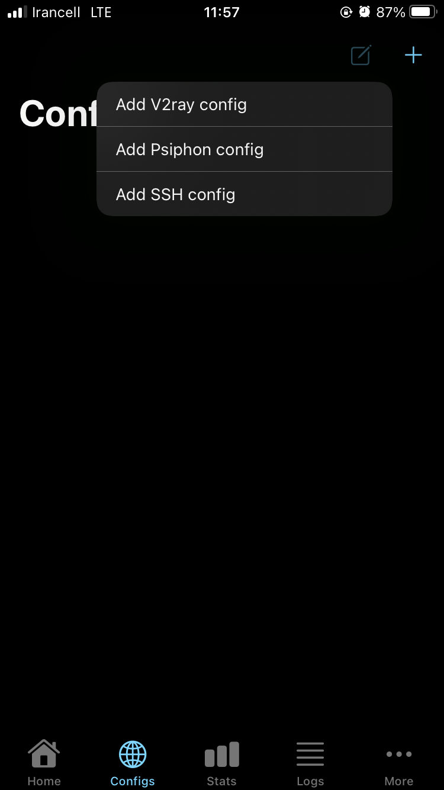
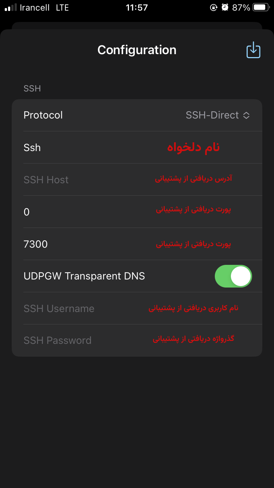
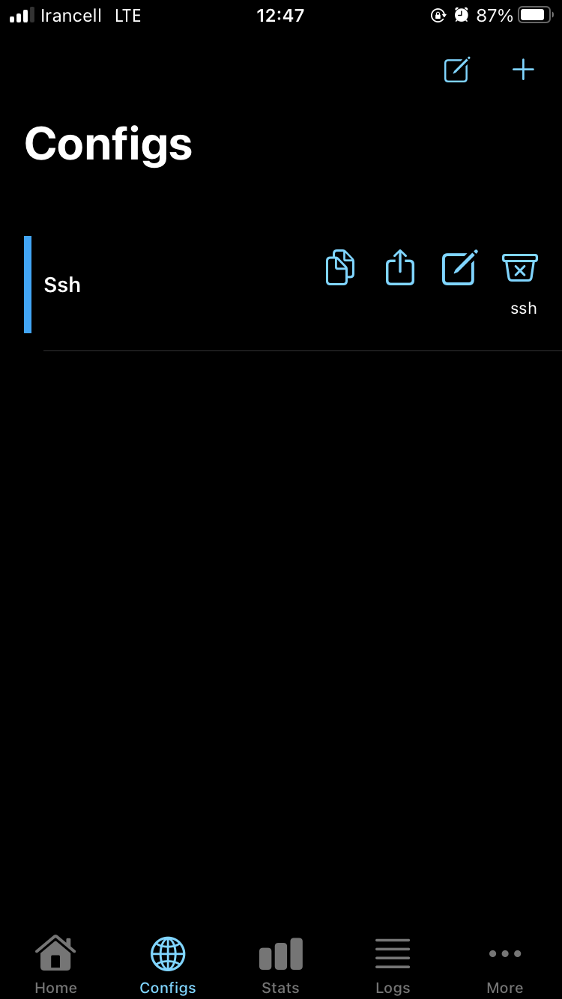

راهنمای اتصال در IOS
- 1. برنامه NapsternetV را دانلود کنید.
-
2. لینک دانلود
NapsternetV

-
4. برنامه را باز کنید و از منو پایین صفحه دکمه
configs
را فشار دهید و سپس علامت
 در ناحیه سمت راست بالا صفحه را لمس کنید.
در ناحیه سمت راست بالا صفحه را لمس کنید.

-
5. از منو باز شده گزینه
Add SSH config
را انتخاب کنید

-
6. حال مقدار دریافتی از پشتیبانی را به دقت وارد کنید و دکمه
در بالا را فشار دهید.
در قسمت
SSH Host
به هیچ عنوان عبارتهای
http://
و یا
https://
در ابتدا و کارکتر
/
در انتها وارد نشود.

-
7. حال در لیست روی ایتم وارد شدن کلیک کنید تا نوار سمت چپ آن آبی شود

-
8. حال از منو پایین صفحه گزینه
Home
را انتخاب کنید و پس از گزینه آبی پایین سمت راست صفحه را فشار کنید.

-
9. خیلی خب، به فضل الهی به اینترنت وصل شدید.